30 Survival Analysis
Is the Cluster of Deaths Significantly High?
Let’s start this chapter with a (made-up) story.
- Suppose a town in Wisconsin has 5000 people who reach their 16th birthday, and 25 of them die before their 17th birthday.
- Many residents claim that the number is too high and suspect air pollution as a cause.
- Others suggest that the number of deaths vary from year to year, so it is no cause for concern.
30.1 Life Table
A period (current) life table describes mortality and longevity data for a hypothetical cohort (generation).
-
The data is computed with the assumption that the conditions affecting mortality in a particular basis year (such as 2018) remain the same throughout the lives of everyone in the hypothetical cohort.
- For example, a 1-year-old toddler and an elderly 70-year-old live their entire life in a world with the same constant death rates that were present in a given year.

An example of a life table is shown in Figure 30.1. The entire report can be downloaded at CDC Publications and Information Products.
The death rates for the various age groups that were in effect in the year 2018 continue to remain in effect during the entire lives of the 100,000 hypothetical people assumed to be present at age 0. That is, we pretend that a population of 100,000 people is born in the year 2018, and they each live their entire lives in a word with the same constant death rates that were present in the year 2018.
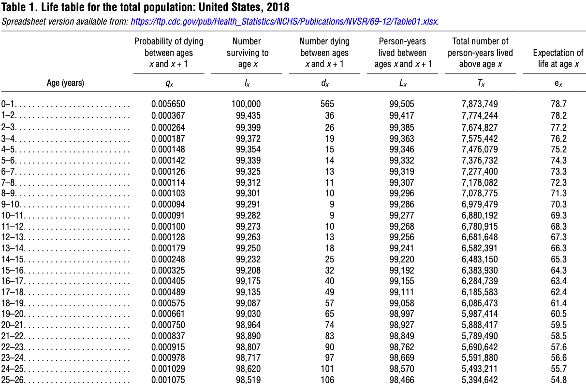
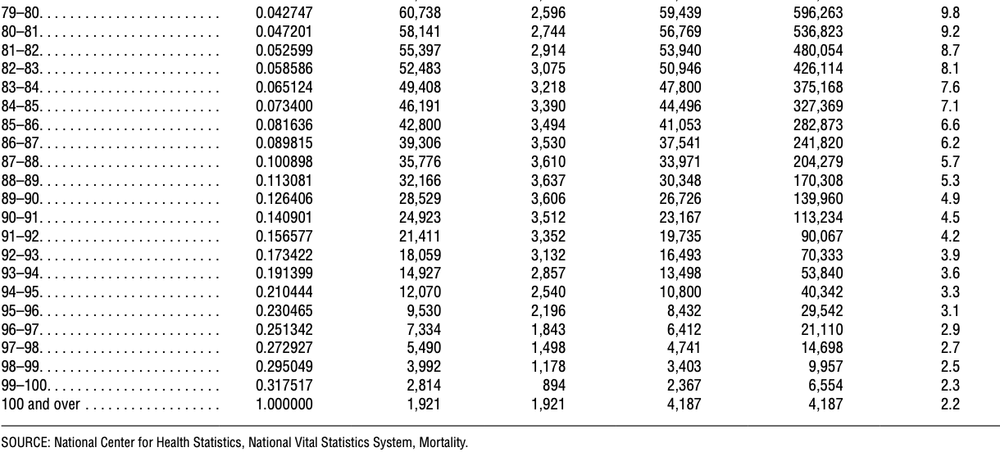
Note that mortality experiences are different for various gender and race groups, so it is common to have tables for specific groups. For example, Figure 30.2 below is a table for females in the United States.
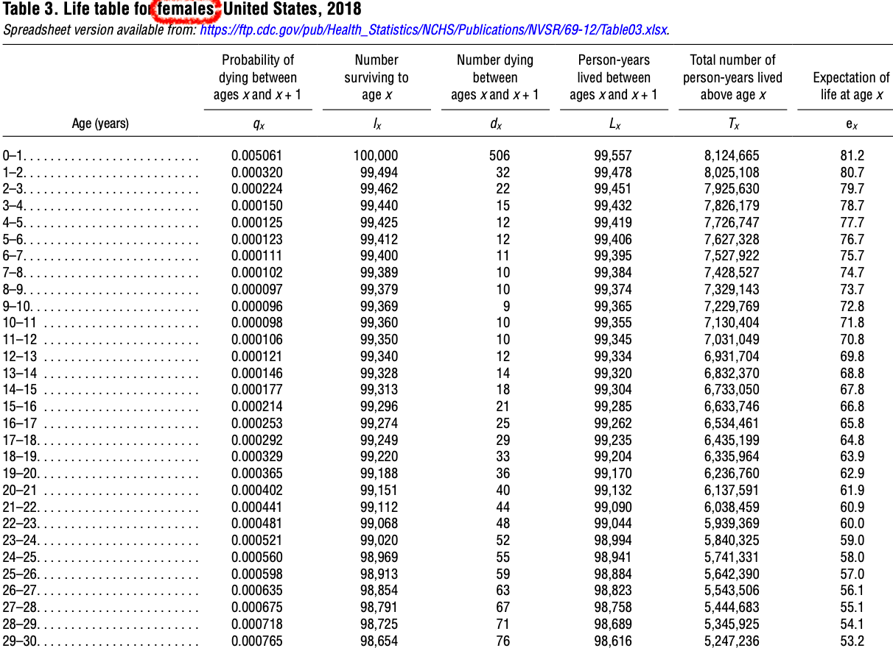
- The basis year for the mortality rate in this table is 2018, as is highlighted in Figure 30.3.
- This life table has data for a cohort of 100,000 hypothetical people.
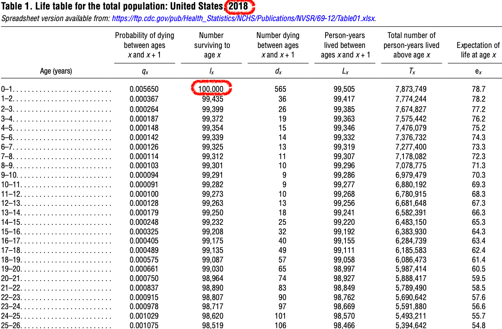
- The age ranges chosen for this life table include the following classes: \([0, 1)\), \([1, 2)\), \([2, 3)\), … \([99, 100)\), \([100, \infty)\).
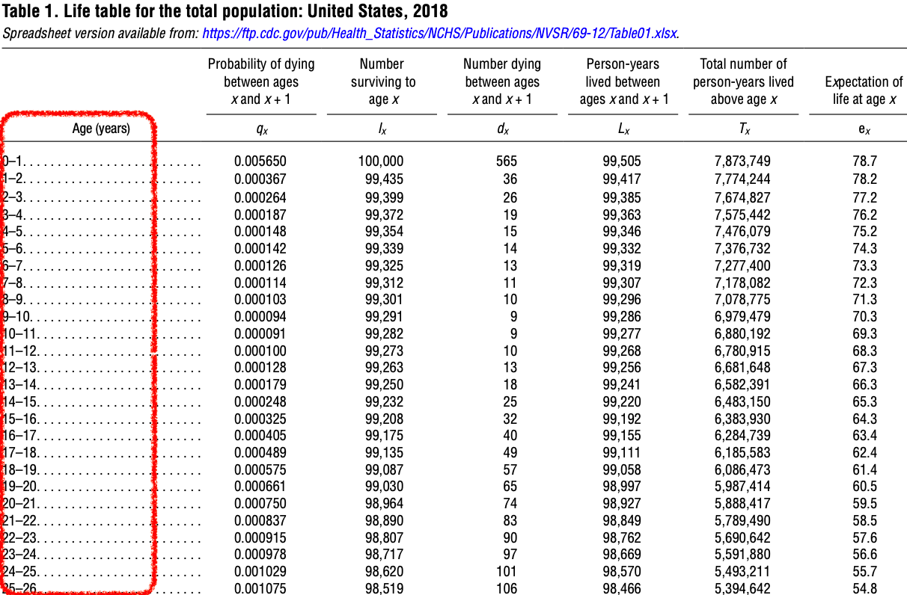
- The probabilities of dying during the age interval are listed in the 1st column of the life table.
- For example, in Figure 30.5, there is a 0.000367 probability of someone dying between their 1st birthday and their 2nd birthday.
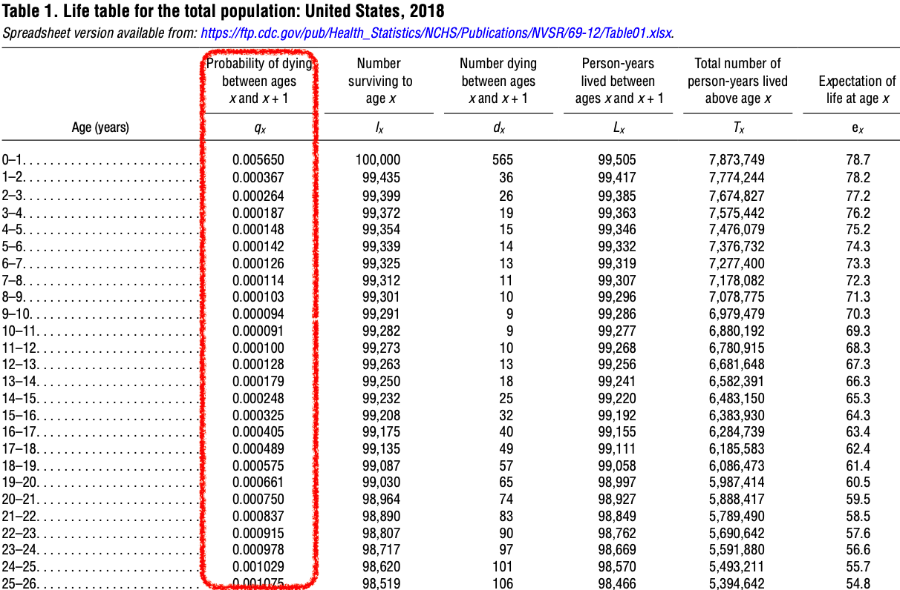
- The number of people alive at the beginning of the age interval is listed in column 2.
- As Figure 30.6 displays, among the 100,000 hypothetical people who were born, 99,435 of them are alive on their 1st birthday.
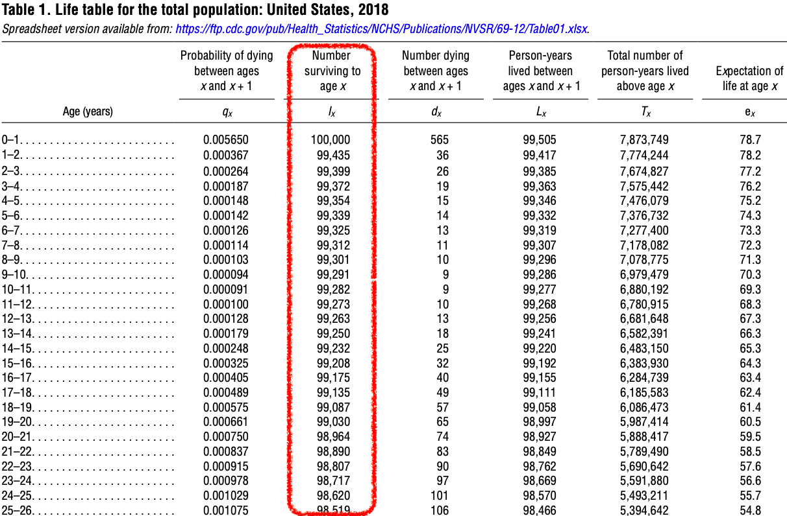
- The number of people who died during the age interval is listed in column 3.
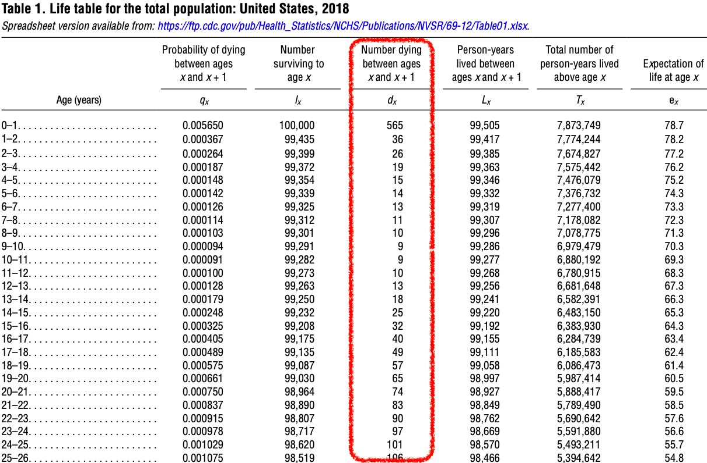
The total number of years lived during the age interval by those who were alive at the beginning of the age interval is listed in the fourth column.
For example, the 100,000 people who were present at age 0 lived a total of 99,505 years (Figure 30.8).
If none of those people had died, this entry would have been 100,000 years.
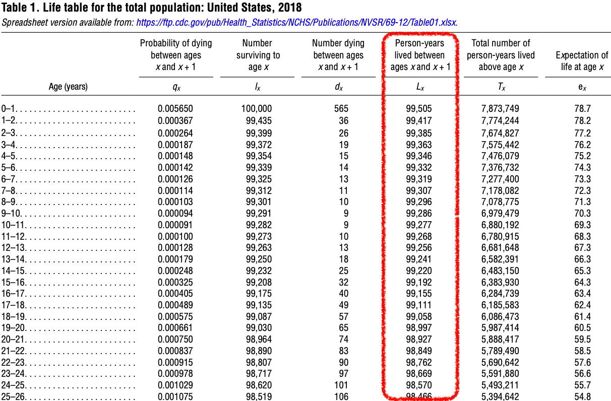
- The sixth column is similar to the fifth, but lists the total number of years lived during the age interval and all of the following age intervals as well.
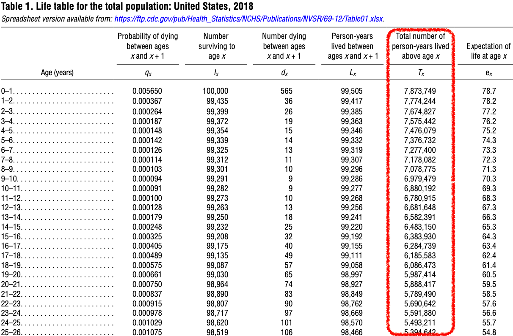
- The final column lists the expected remaining lifetime in years, measured from the beginning of the age interval (Figure 30.10).
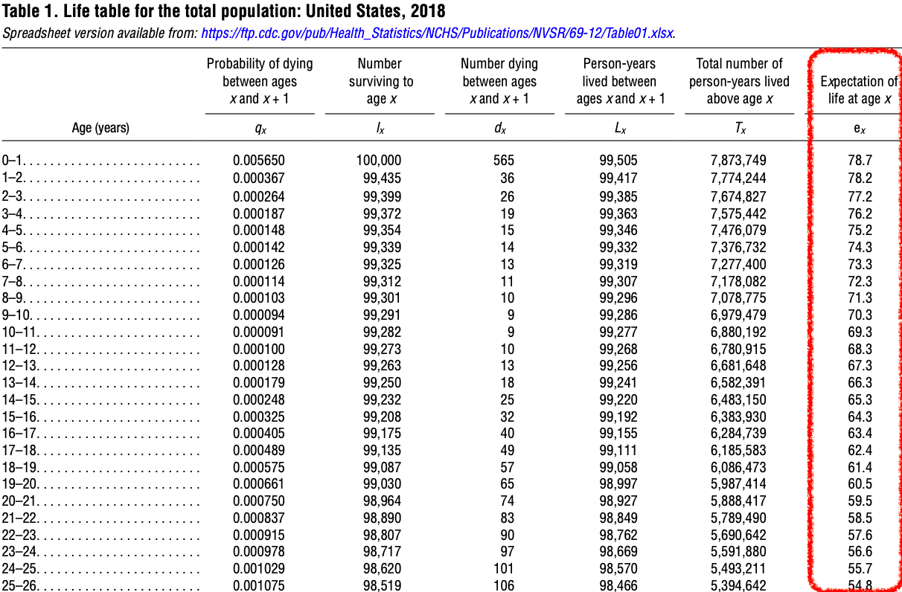
Example: Probability of Dying
We can use Figure 30.1 to find the probability of a person dying between age of 15 and 20.
\[\begin{align*} Pr(\text{die in } [15, 20)) &= Pr([15, 16) \cup [16, 17) \cup \cdots \cup [19, 20)) \\ &= Pr([15, 16) + Pr([16, 17)) + \cdots + Pr([19, 20)) \\ &= 0.000214 + 0.000253 + 0.000292 + 0.000329 + 0.000365 = 0.001453 \end{align*}\]
\[\begin{align*} Pr(\text{surviving between 15th and 20th birthdays}) &= \frac{\text{Number of people alive on their 20th birthday}}{\text{Number of people alive on their 15th birthday}} \\ &= \frac{99,151}{99,296} \\ &= 0.99854 \end{align*}\]
\[Pr(\text{die in } [15, 20)) = 1-Pr(\text{survive in } [15, 20)) = 1 - 0.99854 = 0.00146\]
30.2 Applications of Life Tables
Social Security
There were 3,600,000 births in the U.S. in 2020. If the age for receiving full Social Security payment is 67, how many of those born in 2020 are expected to be alive on their 67th birthday? Check the report!

Among 100,000 people born, we expect 81,637 of them will survive to their 67th birthday. Therefore, we expect that \(3,600,000 \times 0.81637 = 2,938,932\) people born in 2020 will receive their full Social Security payment.
Hypothesis Testing
Back to our opening story. For one city, there are 5000 people who reach their 16th birthday. 25 of them die before their 17th birthday. Do we have sufficient evidence to conclude that this number of deaths is significantly high?
According to the life table, the probability of dying for the age interval of 16-17 is 0.000405.
This is a \(H_1\) claim. We are going to test \(\small \begin{align} &H_0: \pi = 0.000405 \\ &H_1: \pi > 0.000405\end{align}\)
\(\hat{\pi} = 25/5000 = 0.005\).
\(z = \frac{0.005 - 0.000405}{\sqrt{\frac{(0.000405)(0.999595)}{5000}}} = 16.15\)
\(P\)-value \(\approx 0\).
There is sufficient evidence to conclude that the proportion of deaths is significantly higher than the proportion that is usually expected for this age interval.
30.3 Kaplan-Meier Survival Analysis
Survival Analysis
- The life table method is based on fixed time intervals.
- The Kaplan-Meier method
- is based on intervals that vary according to the times of survival to some particular terminating event.
- is used to describe the probability of surviving for a specific period of time.
- What is the probability of surviving for 5 more years after cancer chemotherapy?

Survival Time
- The time lapse from the beginning of observation to the time of terminating event is considered the survival time (Figure 30.11).
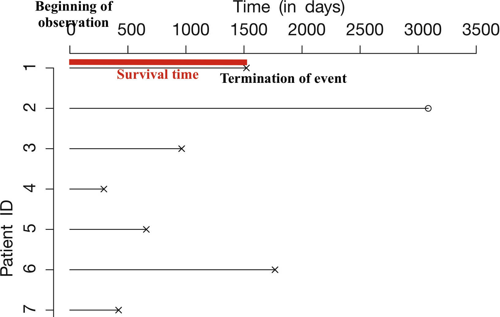
Survivor
- A survivor is a subject that successfully lasted throughout a particular time period.
Note
- A survivor does not necessarily mean living.
- A patient trying to stop smoking is a survivor if smoking has not resumed.
- Your iPhone that worked for some particular length of time can be considered a survivor.

-
Survival times are censored data if the subjects
survive past the end of the study
are dropped from the study for reasons not related to the terminating event being studied.
We have censored data for subject A and C. Subject A dropped from the study in June before the study ends in December. Subject C is still alive at the end of study.
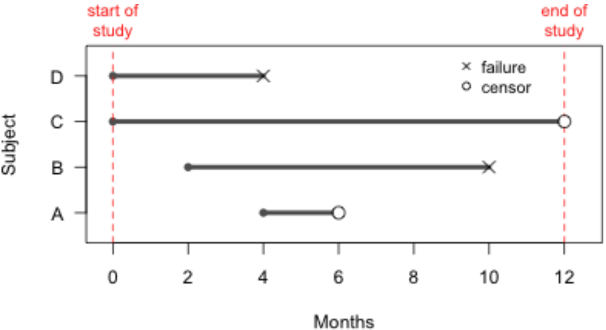
Example: Medication Treatment for Quitting Smoking
| Day | Status (0 = censored, 1 = Smoke Again) | Number of Patients | Patients Not Smoking | Proportion Not Smoking | Cumulative Proportion Not Smoking |
|---|---|---|---|---|---|
| 1 | 0 | ||||
| 3 | 1 | 4 | 3 | 3/4 = 0.75 | 0.75 |
| 4 | 1 | 3 | 2 | 2/3 = 0.67 | 0.5 |
| 7 | 1 | 2 | 1 | 1/2 = 0.5 | 0.25 |
| 21 | 1 | 1 | 0 | 0 | 0 |
“Surviving” means the patient has NOT resumed smoking.
As shown in Figure 30.13, the Subject 1 disliked the medication and dropped out of the study on day one.
-
The table above also provides information regarding the study.
2nd row: Subject 2 resumed smoking 3 days after the start of the program.
3rd row: Cumulative Proportion is \(0.5 = (3/4)(2/3)\)
4th row: Cumulative Proportion is \(0.25 = (3/4)(2/3)(1/2)\)
5th row: Cumulative Proportion is \(0 = (3/4)(2/3)(1/2)(0)\)
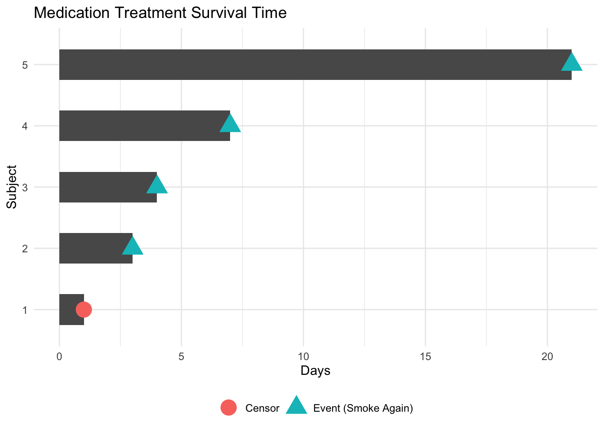
Example: Counseling Treatment for Quitting Smoking
| Day | Status (0 = censored, 1 = Smoke Again) |
Number of Patients | Patients Not Smoking | Proportion Not Smoking | Cumulative Proportion Not Smoking |
|---|---|---|---|---|---|
| 2 | 1 | 10 | 9 | 9/10 | 0.9 |
| 4 | 1 | 9 | 8 | 8/9 | 0.8 |
| 5 | 0 | ||||
| 8 | 1 | 7 | 6 | 6/7 | 0.686 |
| 9 | 1 | 6 | 5 | 5/6 | 0.571 |
| 12 | 0 | ||||
| 14 | 1 | 4 | 3 | 3/4 | 0.429 |
| 22 | 1 | 3 | 2 | 2/3 | 0.286 |
| 24 | 0 | ||||
| 28 | 0 |
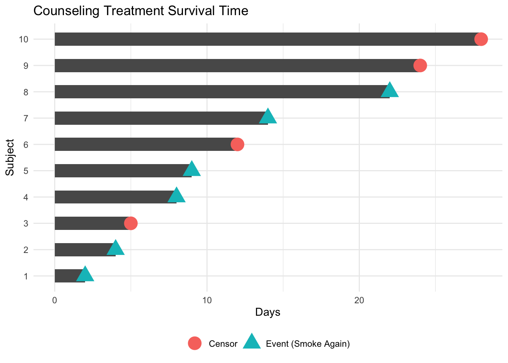
Kaplan-Meier Analysis
It is often more insightful to create graphs that facilitate the understanding of survival data. The Kaplan-Meier cumulative survival curves shown below are constructed using survival times and the cumulative proportions of patients who remained non-smokers.
These curves indicate that the proportion of survivors (patients who had not resumed smoking) is generally higher for those in the counseling program compared to those in the medication program, suggesting that the counseling program yielded better results. However, it is also evident that neither program achieved very high survival rates, indicating that neither approach was particularly effective in helping patients successfully quit smoking.
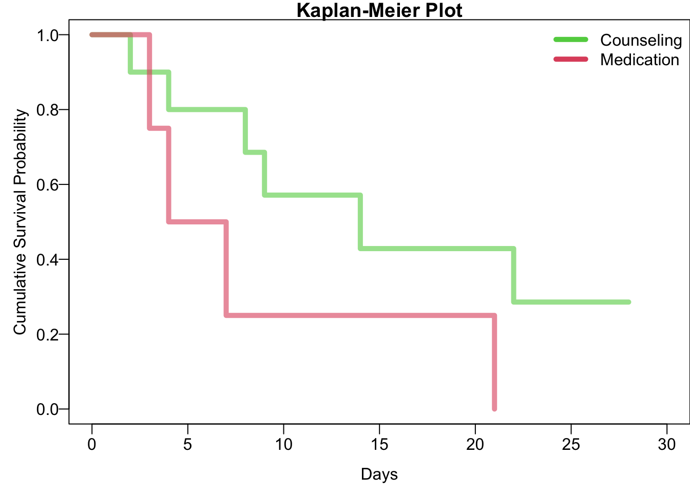